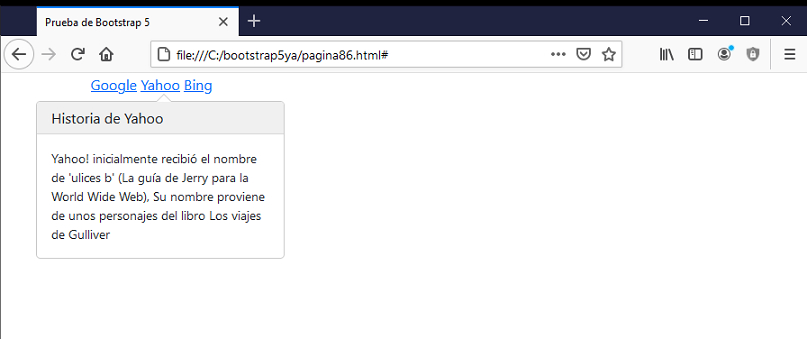

La componente Popover es similar a Tooltips con la diferencia que su contenido se presenta cuando se hace clic generalmente sobre un ancla.
Para trabajar con esta componente además de importar el archivo CSS necesitamos importar el archivo Javascript.
Debemos agregar el siguiente código Javascript en la página:
var popoverTriggerList = [].slice.call(document.querySelectorAll('[data-bs-toggle="popover"]'))
var popoverList = popoverTriggerList.map(function (popoverTriggerEl) {
return new bootstrap.Popover(popoverTriggerEl)
})
Podemos posicionar el Popover asignando un valor a la propiedad 'data-bs-placement':
top bottom left right
Un ejemplo para conocer su sintaxis:
<!doctype html>
<html>
<head>
<title>Prueba de Bootstrap 5</title>
<meta charset="utf-8">
<meta name="viewport" content="width=device-width, initial-scale=1, shrink-to-fit=no">
<link href="https://cdn.jsdelivr.net/npm/bootstrap@5.0.0/dist/css/bootstrap.min.css" rel="stylesheet"
integrity="sha384-wEmeIV1mKuiNpC+IOBjI7aAzPcEZeedi5yW5f2yOq55WWLwNGmvvx4Um1vskeMj0" crossorigin="anonymous">
</head>
<body>
<div class="container">
<a href="#" data-bs-toggle="popover" title="Historia de Google" data-bs-trigger="focus"
data-bs-content="Larry Page y Sergey Brin comenzaron Google como un proyecto universitario en enero de 1996 cuando ambos eran estudiantes de posgrado en ciencias de la computación en la Universidad de Stanford.">Google</a>
<a href="#" data-bs-toggle="popover" title="Historia de Yahoo" data-bs-trigger="focus"
data-bs-content="Yahoo! inicialmente recibió el nombre de 'ulices b' (La guía de Jerry para la World Wide Web), Su nombre proviene de unos personajes del libro Los viajes de Gulliver">Yahoo</a>
<a href="#" data-bs-toggle="popover" title="Historia de Bing" data-bs-trigger="focus"
data-bs-content="Bing (anteriormente Live Search, Windows Live Search y MSN Search) es un buscador web de Microsoft. Presentado por el antiguo director ejecutivo de Microsoft, Steve Ballmer, el 28 de mayo de 2009">Bing</a>
</div>
<script src="https://cdn.jsdelivr.net/npm/bootstrap@5.0.0/dist/js/bootstrap.bundle.min.js"
integrity="sha384-p34f1UUtsS3wqzfto5wAAmdvj+osOnFyQFpp4Ua3gs/ZVWx6oOypYoCJhGGScy+8"
crossorigin="anonymous"></script>
<script>
var popoverTriggerList = [].slice.call(document.querySelectorAll('[data-bs-toggle="popover"]'))
var popoverList = popoverTriggerList.map(function (popoverTriggerEl) {
return new bootstrap.Popover(popoverTriggerEl)
})
</script>
</body>
</html>
En el navegador tenemos como resultado al presionar un ancla:

La propiedad 'data-bs-trigger' si se inicializa con 'focus' luego cuando el operador presiona en cualquier parte de la pantalla el mensaje se oculta. Si no inicializamos esta propiedad para cerrar el mensaje debemos presionar nuevamente en el elemento HTML que abrió el Popover:
data-bs-trigger="focus"